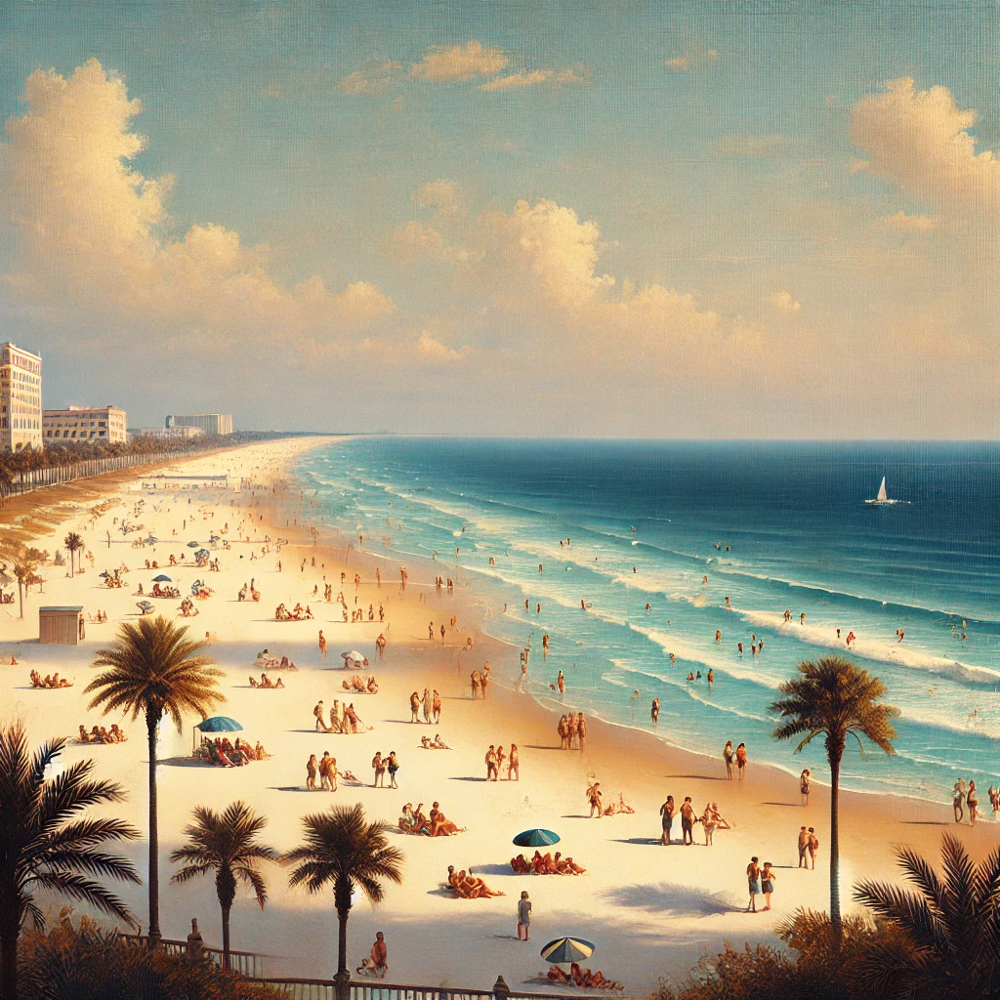
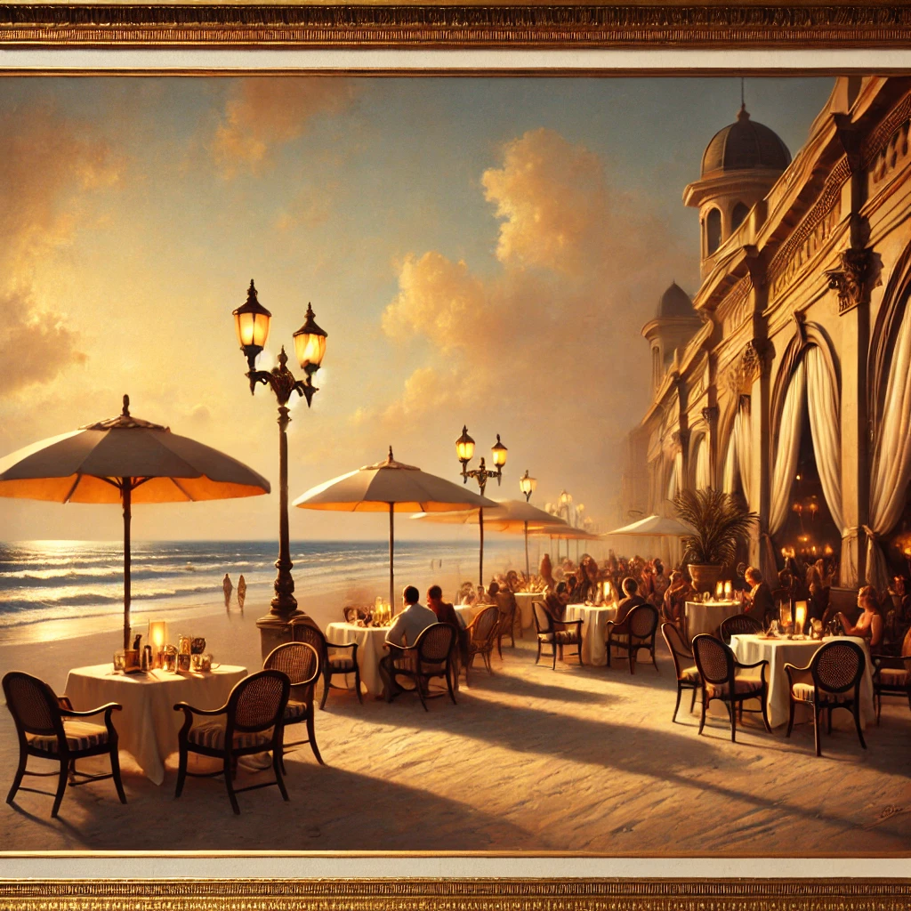
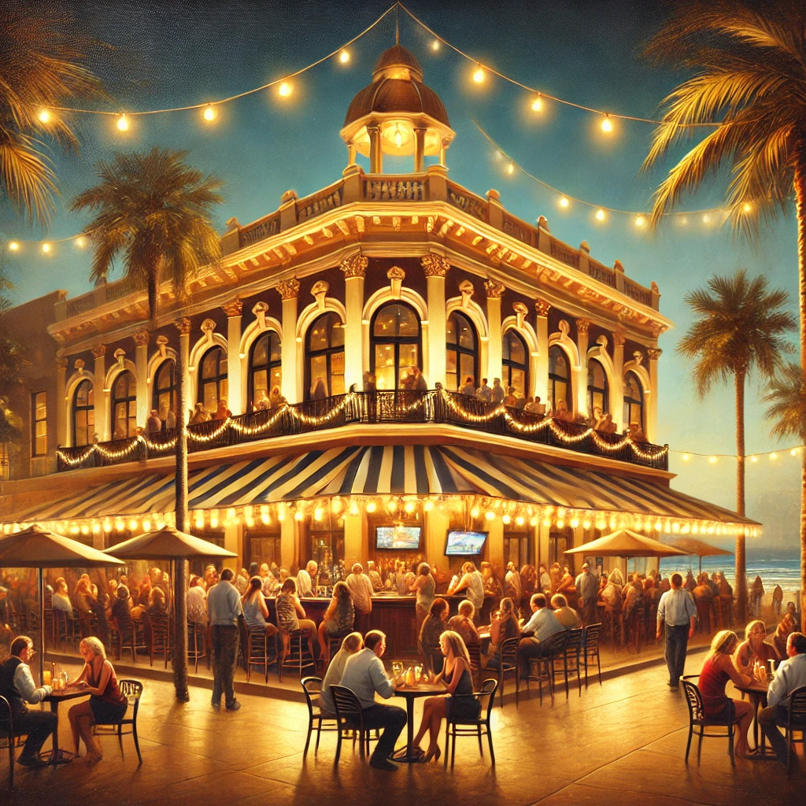
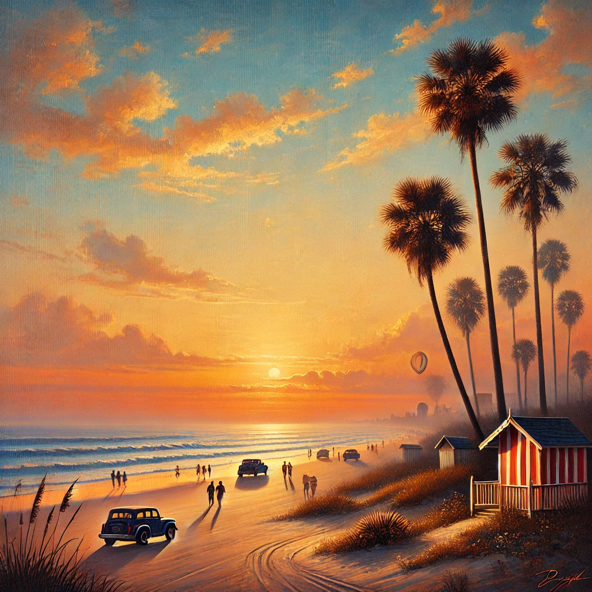

Top Activities in Daytona Beach
Daytona Beach offers something for everyone. Whether you're a beach lover, motorsports enthusiast, or nightlife fan, this city has it all.
- Beachfront Fun: Enjoy 23 miles of beautiful white sand beaches with areas designated for sunbathing, swimming, and driving.
- Daytona International Speedway: Known as the "World Center of Racing," the speedway offers tours and events, including the famous Daytona 500.
- Ocean Walk Shoppes: A beachfront entertainment complex with restaurants, shops, and a movie theater.
- Ponce Inlet: Take a short drive south of Daytona to visit the historic Ponce de Leon Inlet Lighthouse and enjoy beautiful views of the coast.
Dining in Daytona Beach
Daytona Beach offers a variety of dining options to satisfy any craving. From beachside cafes to upscale seafood restaurants, there's something for every palate.
- Ocean Deck: A beachside restaurant known for its fresh seafood and live music atmosphere.
- Joe's Crab Shack: A family-friendly spot right on the beach offering seafood favorites with an ocean view.
- Don Vito's Italian Restaurant: A local favorite for Italian cuisine and a cozy atmosphere.
- The Cellar Restaurant: For a fine dining experience, The Cellar offers upscale dishes in a historic setting.
Nightlife and Entertainment
After the sun sets, Daytona Beach comes alive with bars, clubs, and live music venues. Here are some top spots to enjoy the vibrant nightlife:
- Main Street Station: A popular venue with live bands and a laid-back vibe.
- The Bank & Blues Club: Located on historic Main Street, this club features blues bands and a lively atmosphere.
- The Oyster Pub: A casual spot for drinks and oysters with a large sports bar area.
- Razzle's Nightclub: A nightclub with a spacious dance floor, DJ music, and VIP sections.
Local Tips for Travelers
Here are some insider tips to make the most of your Daytona Beach adventure:
- Best Time to Visit: Daytona Beach is enjoyable year-round, but spring and early summer offer the best weather. Be prepared for crowds during peak racing events like the Daytona 500.
- Beach Driving: Daytona Beach is one of the few places where you can drive on the beach. There are designated areas for cars, so make sure to follow local rules and watch for pedestrians.
- Free Activities: Many beachside parks and events, such as the Daytona Beach Bandshell Concert Series, are free and family-friendly.
- Parking: Parking can be challenging during busy times, but several public lots are available near the beach. Consider arriving early for the best spots.